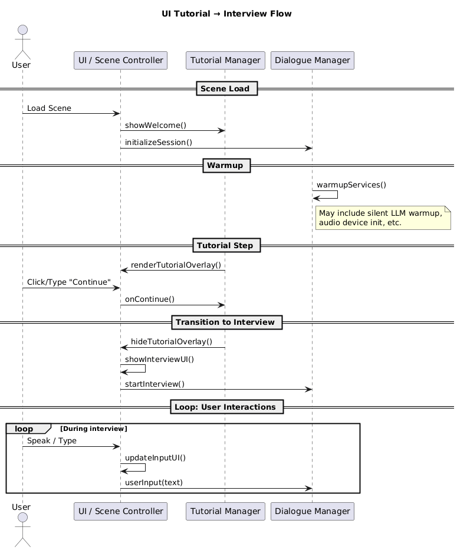
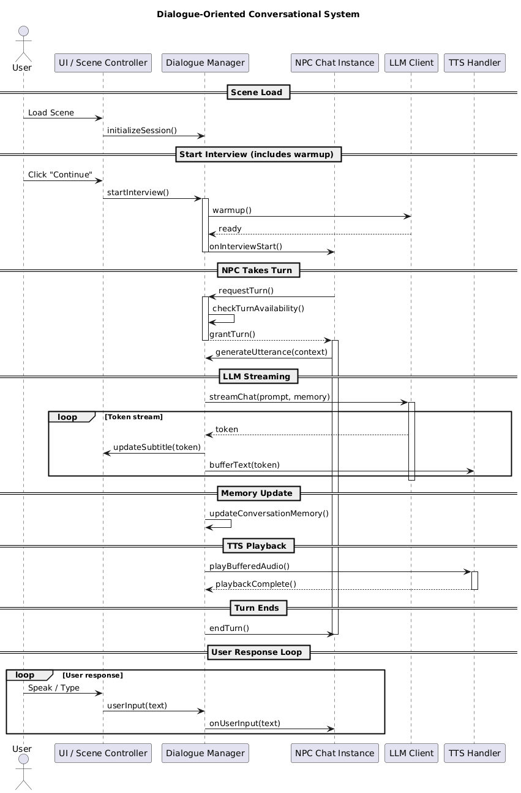
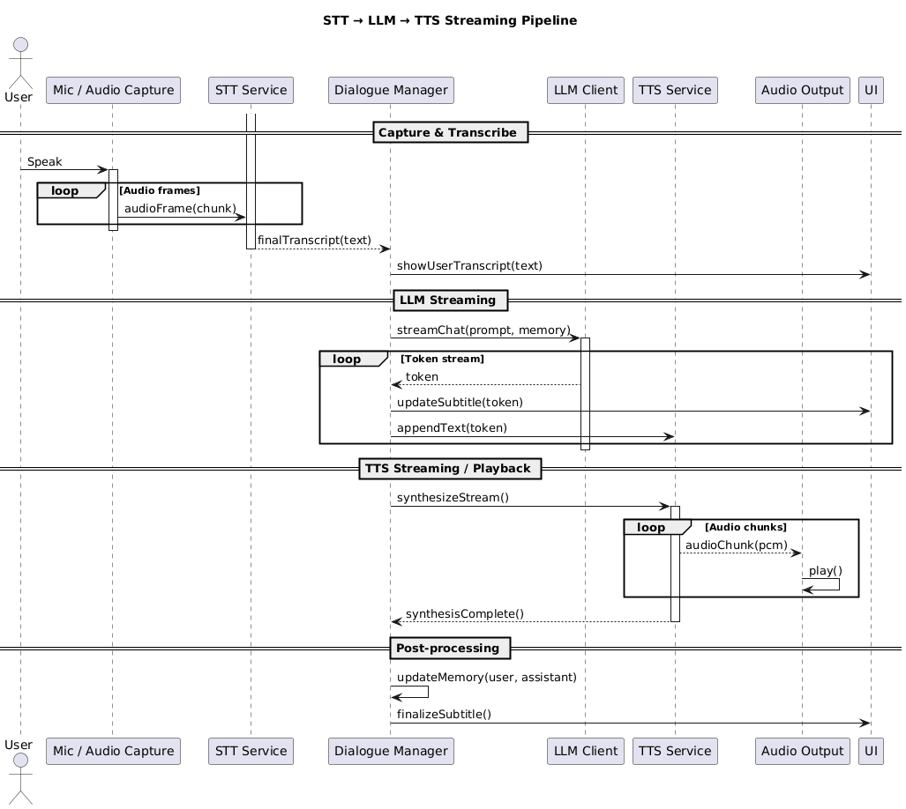
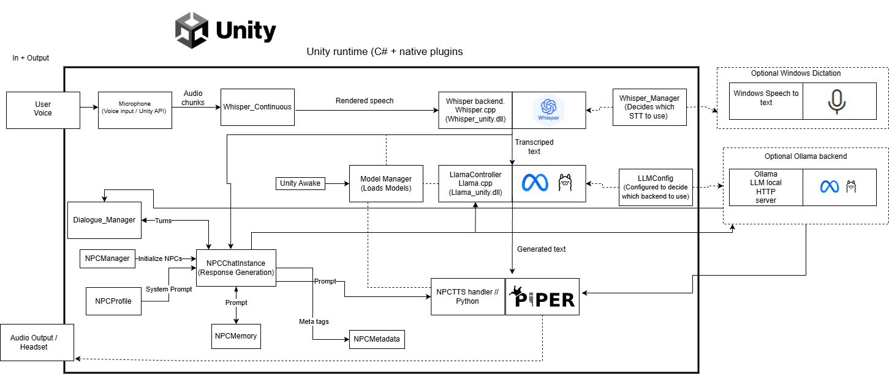

This component diagram provides a structural overview of the conversational system as implemented
within the Unity runtime. User input enters through the microphone and is processed by the Whisper-based
speech recognition module, which converts raw audio into text transcripts.
Recognised speech is forwarded to the Dialogue Manager, which serves as the central orchestration layer.
It governs turn-taking, interview phase control, safety constraints, and routing of input to the
appropriate NPC role, such as HR or Technical interviewer.
The Dialogue Manager interfaces with an abstracted language model backend. This abstraction supports
both a locally embedded llama.cpp plugin for low-latency inference and an Ollama-based HTTP
client as a fallback, without impacting higher-level system logic.
Non-verbal behaviour is coordinated by a dedicated controller responsible for gaze, gestures, and
posture. Final output is rendered through the output layer, combining Piper TTS for speech synthesis
with Unity’s animation system, resulting in a fully local, real-time conversational architecture.

Dialogue-Oriented Interview Turn Management
This diagram illustrates the internal dialogue orchestration during the interview, with an emphasis
on explicit turn-taking and streaming output. Once the interview has started, the Dialogue Manager
coordinates interaction between the user, NPC chat instance, language model client, and TTS handler.
When the NPC is granted a turn, the Dialogue Manager verifies turn availability and requests an utterance
from the NPC chat instance. This request encapsulates the current conversational context and triggers
the language model to begin generating a response.
Language model output is streamed token-by-token rather than produced as a single blocking response.
Each token is immediately forwarded to the UI for subtitle updates while simultaneously being buffered
for text-to-speech synthesis, enabling early feedback to the user.
After generation completes, the conversation memory is updated to preserve contextual continuity.
The buffered audio is then played back through the TTS handler. Once playback finishes, the Dialogue
Manager explicitly ends the NPC’s turn and returns control to the user.

Dialogue-Oriented Interview Turn Management
This diagram illustrates the internal dialogue orchestration during the interview, with an emphasis
on explicit turn-taking and streaming output. Once the interview has started, the Dialogue Manager
coordinates interaction between the user, NPC chat instance, language model client, and TTS handler.
When the NPC is granted a turn, the Dialogue Manager verifies turn availability and requests an utterance
from the NPC chat instance. This request encapsulates the current conversational context and triggers
the language model to begin generating a response.
Language model output is streamed token-by-token rather than produced as a single blocking response.
Each token is immediately forwarded to the UI for subtitle updates while simultaneously being buffered
for text-to-speech synthesis, enabling early feedback to the user.
After generation completes, the conversation memory is updated to preserve contextual continuity.
The buffered audio is then played back through the TTS handler. Once playback finishes, the Dialogue
Manager explicitly ends the NPC’s turn and returns control to the user.

End-to-End Streaming Speech Interaction Pipeline
This sequence diagram depicts the full speech-based interaction pipeline, from live audio capture to
synthesized speech output. User speech is continuously captured by the microphone and processed as
short audio frames that are forwarded to the speech-to-text (STT) service.
The STT component incrementally processes incoming audio and emits a final transcript once speech
concludes. This transcript is displayed in the UI and passed to the Dialogue Manager as user input.
The Dialogue Manager initiates a streaming request to the language model client. Generated tokens are
returned incrementally, allowing the UI to update subtitles in real time while text is appended to an
internal buffer.
In parallel, the TTS service begins synthesizing speech as soon as sufficient text is available.
Audio is streamed as PCM chunks and played back immediately, overlapping synthesis with playback.
After completion, post-processing steps such as memory updates and subtitle finalisation are performed.

Unity-Based Conversational System Architecture
This component diagram illustrates the end-to-end architecture of the Unity-based, fully local conversational system. User speech is captured via Unity’s Microphone API and processed continuously by a Whisper-based speech-to-text pipeline, which segments audio into overlapping chunks and produces incremental transcriptions. A Whisper Manager abstracts the speech recognition backend, allowing runtime selection between a native Whisper.cpp plugin and an optional operating-system-level dictation service. Once transcribed, user input is forwarded to the Dialogue Manager, which acts as the central orchestration layer responsible for turn-taking, interview phase control, NPC role assignment, and safety constraints.
Dialogue generation is handled through an abstracted language model interface that supports both an embedded llama.cpp backend for low-latency local inference and an optional Ollama-based HTTP backend, without impacting higher-level dialogue logic. Each NPC maintains its own chat instance, prompt context, memory, and metadata, enabling coherent multi-party interaction. Generated responses are passed to the TTS subsystem, where Piper synthesizes speech locally via a dedicated handler that supports streaming playback. The resulting audio is rendered through Unity’s audio output while non-verbal behaviour—such as gaze, posture, and gesture timing—is coordinated in parallel, producing a real-time, privacy-preserving conversational loop entirely executed on-device
Layered Speech-to-Speech Interaction Overview
This diagram presents a high-level overview of the system’s layered speech interaction pipeline. User speech is captured
by the microphone and transcribed by a local Whisper-based STT module, producing a text transcript that enters the
Dialogue Manager.
The Dialogue Manager coordinates turn-taking, interview phase progression, and NPC role selection, routing the input to
the appropriate agent. Dialogue generation is handled by a local LLM backend, which streams tokens containing both
spoken content and behavioural metadata.
Generated output is split between a metadata parser for animation and gaze control, and a sentence buffer that feeds
Piper TTS for streamed speech synthesis. The resulting audio and synchronized non-verbal behaviour are rendered in
Unity, completing a fully local, real-time conversational loop.
Key Features:
Real-time transcription
Two AI agents with token generation on device
Persistent text per agent
Gaze tracking and Non-Verbal animations
Natural speech synthesis, real-time streaming
Turn-based coordination flow
Whisper Architecture
For automatic speech recognition (ASR), we employ Whisper, an encoder–decoder Transformer model
trained on roughly 680k hours of weakly labelled web audio [whisperWeakSupervision].
Whisper expects mono audio at a sampling rate of 16 kHz. Consequently, the microphone stream from Unity
is resampled to 16 kHz and scaled to lie within [-1, 1]. Rather than operating directly on the raw waveform,
the model first converts the signal into a log-Mel spectrogram. The audio is divided into overlapping analysis
frames using a 25 ms window (400 samples) with a 10 ms hop (160 samples), and for each frame, a short-time
Fourier transform (STFT) is computed.
Encode Architecture
The encoder operates on the normalised log-Mel spectrogram and converts it into a sequence of higher-level audio features.
First, a small 1D convolutional “stem” maps the 80 Mel-frequency channels into the model’s hidden size dmodel
(e.g. 384 for the Tiny model) [whisperWeakSupervision].
And uses a stride greater than one to reduce the number of
time steps, so later layers can look over longer spans of speech at once.
Decode Architecture
Text generation is performed by an autoregressive Transformer decoder that conditions on the encoder output. Whisper uses a GPT-style
byte-pair encoding (BPE) [whisperWeakSupervision] vocabulary, so both ordinary text and control symbols (for task, language and timestamps).
Decoding is always initialised with a fixed prefix: a start-of-transcript token, tokens indicating the task (e.g. transcription vs. translation),
and a language token (e.g. <|en|> or <|da|>).
Integration into Unity
To run Whisper locally we rely on whisper.cpp, [whispercpp] a C++ reimplementation of the original model that exposes a low-level C API for
loading models and performing inference on raw PCM audio. Unity cannot directly consume this C++ code from managed C#, so we compile a thin native
bridge as a shared library (DLL on Windows) with a small set of exported C functions. This bridge maintains a global Whisper model context and exposes
three entry points: model loading, unloading, and transcription.
For each transcription call the wrapper reads a 16 kHz mono WAV file, skips the header, converts 16-bit integer samples to normalized floating point values
in [-1, 1], and invokes whisper_full with suitable decoding parameters (greedy sampling, English language, timestamps disabled). The resulting text segments
are linked into a single UTF-8 string that is returned to Unity. A partial-transcription variant additionally performs a simple energy-based silence check and
filters out segments that Whisper marks as non-speech (e.g. music or noise labels), allowing us to ignore empty or noisy chunks at the native level.
On the Unity side we access this native library via C# DLL_Import bindings, which expose the exported functions as ordinary methods.
During interaction, Unity’s Microphone API [UnityMicrophone] streams mono audio at 16 kHz. The WhisperContinuous Script/component segments this stream
into short chunks of approximately 3–4 s, writes each chunk to a temporary WAV file, and calls into the native bridge for transcription. The returned text
is accumulated into an incremental transcript on the C# side. A lightweight sentence-boundary heuristic monitors when the last non-empty chunk was received;
if no new speech has been recognized for a configurable interval, or if a hard maximum duration per user turn is exceeded, the current transcript is finalized.
Local LLaMA integration in Unity
The cognitive core of the interviewer agents is implemented using a locally hosted large language model executed via llama.cpp. [llamacpp]
In line with the fully on-device design of the system, the model is not accessed through an external HTTP endpoint, but compiled as a native plugin
and linked directly into the Unity runtime. This removes network round-trips from the dialogue loop and gives fine-grained control over model loading,
quantisation level, and streaming behaviour at the level of individual tokens.
The native backend is exposed to C# through a compact C-style interface defined in a dedicated wrapper library llama_unity.dll.
Internally, this plugin maintains three long-lived objects: the loaded model instance (weights and hyperparameters), a llama_context representing
the current decoding session (including the attention key–value cache), and the associated token vocabulary. These structures are implemented as static
globals guarded by a mutex, serialising access from Unity and preventing concurrent calls from corrupting the model state. This design allows multiple NPC
controllers to share a single loaded model while still issuing independent generation requests in a controlled fashion.
Once a user utterance has been finalised by the Whisper pipeline and turn-taking logic, the dialogue manager serialises the local conversation state
into a single prompt string. This prompt follows an instruction-tuned format: a system-style prefix specifies the interviewer’s role, constraints and
personality; a short window of recent turns preserves dialogue coherence; and the latest user input is appended at the end. [qwen3technicalreport]
The resulting string is passed to llama_generate_stream_begin, which tokenises the prompt, initialises the context and consumes the full history
in one batch. Unity then starts a coroutine that repeatedly invokes llama_generate_stream_next once per frame, each call returning either a new UTF-8
text fragment or a null pointer to signal completion. The NPC controller appends these fragments to an internal reply buffer and simultaneously forwards
them to downstream components (e.g. segmentation logic and TTS), yielding a genuinely streaming interaction pattern rather than waiting for a full turn to be produced.
The streaming interface is tightly coupled to both the Piper TTS integration and the non-verbal behaviour controllers. As soon as the first non-empty
text chunk arrives from llama.cpp, the system can segment it into a sentence-like unit and hand it off to the TTS handler for synthesis, while further
tokens continue to arrive in the background. In parallel, the prompt format includes lightweight machine-readable tags (e.g. JSON-like meta blocks) that
specify desired gaze targets, posture changes or gesture triggers for the current turn. These tags are parsed on the Unity side and mapped to animation
parameters, ensuring that the temporal unfolding of speech, gaze and gesture remains aligned with the incremental output of the language model.
Ollama-based integration in Unity
Although the main interview system links the language model directly into Unity via llama.cpp, the same class of instruction-tuned models can also be
deployed through Ollama as an alternative backend. In this configuration the LLM runs as a separate local server process, and Unity communicates with it
over HTTP using Ollama's streaming API. This decoupled setup is easier to configure and monitor, and is particularly useful on machines where embedding
the model into the game engine is too demanding in terms of memory or GPU resources.
From the Unity side, the dialogue manager constructs the same instruction-tuned prompt string as for the native llama_unity plugin and submits it to the
Ollama server. Internally, Ollama tokenises the prompt, runs the Transformer decoder to generate successive tokens, and streams partial outputs back to the
client as a sequence of JSON messages. Each message contains a fragment of generated text together with metadata indicating whether generation has finished.
A lightweight HTTP client component in Unity accumulates these text fragments into a growing reply buffer and exposes them to the rest of the system through
the same streaming interface as the in-process backend.
By standardising on an incremental text stream abstraction, the higher-level components (segmentation, Piper TTS, gaze and gesture controllers) remain agnostic
to whether the model is executed in-process via llama.cpp or out-of-process via Ollama. This allows the project to trade off tight resource control against
ease of deployment: high-end machines can run the model directly inside Unity for minimal latency, while lower-spec systems can offload LLM inference to a
local Ollama server without changing the overall interaction architecture.
Piper TTS
The final stage of the pipeline converts the language model’s textual output into audible speech. In keeping with the overall design goal of fully local
processing, we use Piper, a neural text-to-speech system developed by the Rhasspy/Open Home Foundation community. [piperTTS] Piper provides ONNX-based
VITS models with multiple quality tiers (from 16 kHz "x_low" to 22.05 kHz "high") and runs entirely offline. Two medium-quality voices were
implemented (22.05 kHz audio, ≈15–20M parameters) to give the two interviewer agents distinct vocal identities while keeping inference cost manageable.
Piper models are distributed as paired .onnx and .json files that encapsulate the neural network weights and corresponding configuration. [piperVoices]
From the Unity side, the TTS engine is accessed through a dedicated component NPCTTSHandler Script, which exposes a single high-level
method EnqueueSpeech(string text). When called, this method schedules a synthesis request that is processed in the background. Internally,
the handler spawns a Python subprocess, passes the cleaned text and model path, and reads the generated audio bytes from the subprocess’ standard output.
The audio is produced at 22.05 kHz, mono, 16-bit integer resolution, consistent with the Piper model configuration.
The PCM byte stream returned by the Python backend is converted into Unity’s native audio format. The TTS handler treats the bytes as standard
16-bit audio samples, converts them to floating-point values in the range [-1, 1], and stores them in a float[] buffer. From this buffer it
creates a mono AudioClip at 22.05 kHz, matching the Piper model’s sampling rate and avoiding extra resampling and distortion.
The resulting clip is then queued for playback on the NPC’s dedicated AudioSource component.
To decouple synthesis time from playback, the implementation uses two queues.
(1) a generation queue holding pending callback requests and (2) a pre-rendered queue contanining fully construced AudioClip instances ready to play.
A coroutine processes the generation queue by launching background synthesis tasks, while a separate coroutine consumes the pre-rendered queue,
feeding clips sequentially to the AudioSource. This separation allows for TTS generation for later sentences to overlap with the playback of earlier ones,
smoothing perceived latency when agents produce longer turns.
The TTS integration is tightly coupled to the streaming behaviour of the local LLM. The language model produces its response incrementally as a sequence
of text chunks. The NPC controller segments this growing string into sentence-like units based on punctuation (periods, question marks)
and a minimum length threshold. Each completed segment is immediately passed to EnqueueSpeech, even while further tokens are still being generated.
In practice this means that Piper begins synthesising audio for the beginning of the agent’s reply after a few hundred milliseconds of model computation,
rather than waiting for the full response. The resulting audio clips are played back as a continuous stream, giving the impression of a single coherent,
uninterrupted chain of speech despite being assembled from multiple TTS calls.
The TTS handler also exposes global callbacks that signal when any NPC is speaking. When the first clip in the pre-rendered queue begins playback,
the handler invokes an OnGlobalPlaybackStart event; when the final clip finishes, it emits OnGlobalPlaybackEnd. These events are listened to by the
speech-recognition layer Whisper_Continuous, which temporarily disables committing new user speech while the agents are talking.
This prevents the system from accidentally treating the avatar’s synthetic speech as user input and enforces a clear alternation between user and NPC turns.
Once Piper has finished speaking, the ASR module is re-enabled and the user can take the floor again. In combination, these mechanisms allow
Piper to function not merely as an output module, but as an integral part of the timing and turn-taking logic in the multi-party interview scenario.
.png)